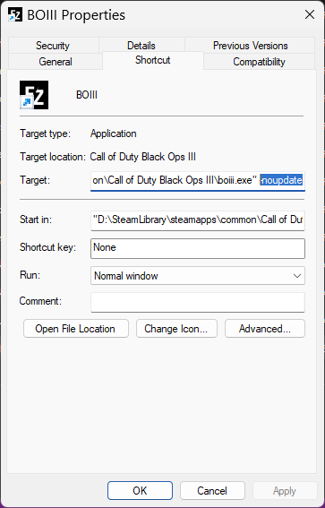
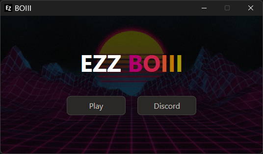
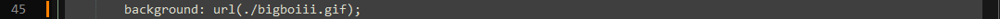

How to make themes for the BOIII client
Please, don't get scared from the code. It's actually simple.
Table of content:
| How to install themes
| Preset themes
| How to make your own themes
How to install themes
First thing you have to do is to stop BOIII from updating.
This can be done easily by making a shortcut of boiii.exe, right clicking and adding "-noupdate" in the target field like this:

After that go to "%localappdata%\boiii\data\launcher" and place the theme files there.
WARNING! Make sure to always launch the BOIII client from the shortcut or it'll delete the theme files!
Preset themes
Before we get into the actual coding, here are some preset themes you can download if you're lazy
Retro Sunset (animated background)

EZZ BOIII
Old BOIII
BOIII Redux
Hehe BOIII (plays sound on startup)
How to make you own themes
Now this part will either seem difficult or easy depending on your computer experience. To make your own theme you have to start by copying the main.html and bigboiii.jpg files from "%localappdata%\boiii\data\launcher". These will be the files we're modifying.
I reccomend using a coding program like notepad++ (or VS code if you're a full degenerate) to edit the files but notepad will do fine.
First, changing the background. Changing the background is easy enough, all you need to do is to switch the bigboiii.jpg with any JPG image you want. However, making an animated background (basically a gif) is a bit more complex but should still be easy enough for a 5 year old.
Open main.html with any text editing program. Press CTRL + F (usually the search shortcut) and look for "bigboiii.jpg". Once you find it just rename it to any gif name you want like this:
Before:
After:

Secondly, Changing the color of the font. Changing the color of the text on the client is easy but frustrating. First, find this string of code:
Now the next part is easy, go to any hex color picker site (I reccomend Gradient Generator because it supports making gradients) and pick your colors of choice.
Now once you have them simply replace the old hex codes with the new ones like this:
Lastly, Making BOIII play a sound on startup. Making BOIII play a sound on startup is extremely easy. Just insert the folowing line of code right after the body tag (replacing "whatever.mp3" with any sound effect you want):

For any questions DM methdealer5916